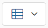
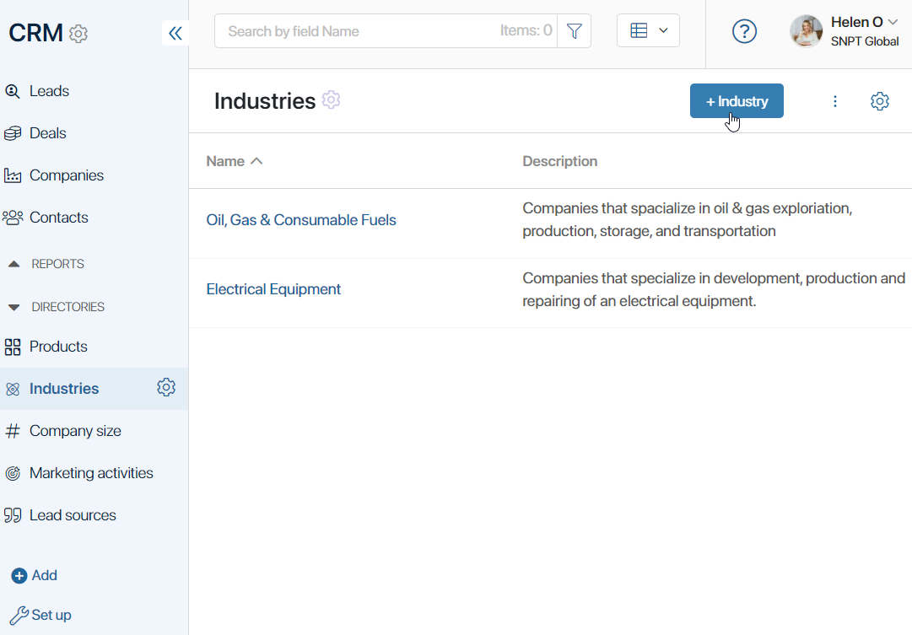
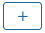
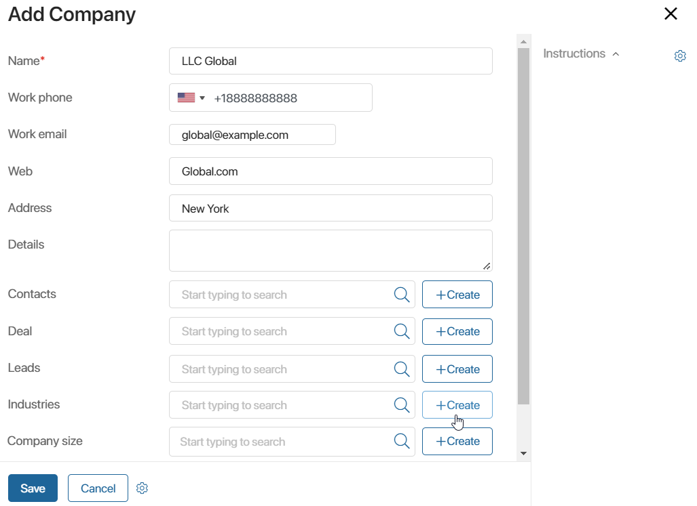

The Directories store the data used in the CRM workspace. For better usability, the data is presented as lists and tables. Directory entries are added by BRIX users who have been granted permission to create items.
In Directories you can:
- Create a list of Products provided by your company. Products are linked to the Leads app. When adding a lead, you can specify the product the potential customer is interested in.
- Specify Industries and Company size of your counterparties. Using these apps, you can track what kinds of companies are more interested in your products. The Industries and Company size apps are linked with the Companies app. When creating a new company, you can select the necessary entries from the linked apps.
- Add Marketing activities. On the page of a marketing activity, you can assign tasks to other employees and use the activity stream to discuss questions related to this activity.
- Specify Lead sources. These can be incoming calls, a web form on your website, an email newsletter, etc. Information in this app can help you to analyze which promotion channels your company uses are most effective.
- Create Sales teams which will help you assign employees responsible for sales to different categories, such as branches of your company. Unlike other directories, only system administrators have access to this app.
As Directories are apps, standard settings are available for them: set up business processes and custom forms, restrict access to data, add action buttons, etc. To open the settings menu, click the gear icon next to the corresponding directory’s name.
By default, the app’s items are displayed as a table. You can switch to the Kanban board view by clicking the  switch at the top of the page.
Add a new item to a directory
New items are added to directories in the same way. You can create them manually or automatically using the API.
Read more about adding new items using the API in BRIX Public API.
There are several ways to add a new item manually:
- In the CRM workspace, select the directory you need and click the +Item Name button, for example, +Industry.

- On the creation or editing page of an item of a bound app, click the +Create button or the  icon. For example, when you create a company you can also create an industry the company belongs to.

When you create a new item in Directories, the only required field is Name. All other information can be specified later on the item’s page.
Found a typo? Select it and press Ctrl+Enter to send us feedback